This notebook provides an interactive introduction to univariate data analysis using Python. You’ll learn how to summarize and visualize single-variable datasets using summary statistics and various chart types.
Univariate data consists of observations on a single variable—for example, annual earnings, individual income, or GDP over time. This chapter teaches you how to summarize and visualize such data effectively.
What you’ll learn:
Calculate summary statistics (mean, median, standard deviation, quartiles, skewness, kurtosis)
Create visualizations for numerical data (box plots, histograms, kernel density estimates, line charts)
Visualize categorical data (bar charts, pie charts)
Apply data transformations (logarithms, standardization)
Work with time series transformations (moving averages, seasonal adjustment)
Datasets used:
AED_EARNINGS.DTA: Annual earnings for 171 full-time working women aged 30 in 2010
AED_REALGDPPC.DTA: U.S. quarterly real GDP per capita from 1959 to 2020
AED_HEALTHCATEGORIES.DTA: U.S. health expenditures by category in 2018
AED_FISHING.DTA: Fishing site choices for 1,182 fishers
AED_MONTHLYHOMESALES.DTA: Monthly U.S. home sales from 1999 to 2015
Chapter outline:
2.1 Summary Statistics for Numerical Data
2.2 Charts for Numerical Data
2.3 Charts for Numerical Data by Category
2.4 Charts for Categorical Data
2.5 Data Transformation
2.6 Data Transformations for Time Series Data
Practice Exercises
Case Studies
Setup
Run this cell first to import all required packages and configure the environment.
# Import required librariesimport numpy as npimport pandas as pdimport matplotlib.pyplot as pltimport seaborn as snsfrom scipy import statsimport randomimport os# Set random seeds for reproducibilityRANDOM_SEED =42random.seed(RANDOM_SEED)np.random.seed(RANDOM_SEED)os.environ['PYTHONHASHSEED'] =str(RANDOM_SEED)# GitHub data URL (data streams directly from here)GITHUB_DATA_URL ="https://raw.githubusercontent.com/quarcs-lab/data-open/master/AED/"# Optional: Create directories for saving outputs locallyIMAGES_DIR ='images'TABLES_DIR ='tables'os.makedirs(IMAGES_DIR, exist_ok=True)os.makedirs(TABLES_DIR, exist_ok=True)# Set plotting style (dark theme matching book design)plt.style.use('dark_background')sns.set_style("darkgrid")plt.rcParams.update({'axes.facecolor': '#1a2235','figure.facecolor': '#12162c','grid.color': '#3a4a6b','figure.figsize': (10, 6),'text.color': 'white','axes.labelcolor': 'white','xtick.color': 'white','ytick.color': 'white','axes.edgecolor': '#1a2235',})print("✓ Setup complete! All packages imported successfully.")print(f"✓ Random seed set to {RANDOM_SEED} for reproducibility.")print(f"✓ Data will stream from: {GITHUB_DATA_URL}")
✓ Setup complete! All packages imported successfully.
✓ Random seed set to 42 for reproducibility.
✓ Data will stream from: https://raw.githubusercontent.com/quarcs-lab/data-open/master/AED/
2.1 Summary Statistics for Numerical Data
Summary statistics provide a concise numerical description of a dataset. For a sample of size \(n\), observations are denoted: \[x_1, x_2, \ldots, x_n\]
Key summary statistics:
Mean (average): \[\bar{x} = \frac{1}{n} \sum_{i=1}^{n} x_i\]
Median: The middle value when data are ordered
Standard deviation: Measures the spread of data around the mean \[s = \sqrt{\frac{1}{n-1} \sum_{i=1}^{n} (x_i - \bar{x})^2}\]
Quartiles: Values that divide ordered data into fourths (25th, 50th, 75th percentiles)
Skewness: Measures asymmetry of the distribution (positive = right-skewed)
Kurtosis: Measures heaviness of distribution tails (higher = fatter tails)
Economic Example: We’ll examine annual earnings for full-time working women aged 30 in 2010.
Load Earnings Data
# Load the earnings dataset from GitHubdata_earnings = pd.read_stata(GITHUB_DATA_URL +'AED_EARNINGS.DTA')print(f"✓ Data loaded successfully!")print(f" Shape: {data_earnings.shape[0]} observations, {data_earnings.shape[1]} variables")print("\nFirst 5 observations:")print(data_earnings.head())
Raw kurtosis = 7.32; Excess kurtosis = 4.32 (what we report here)
Normal distribution has raw kurtosis = 3, so excess kurtosis = 0
Heavier tails than normal distribution
More extreme values than a bell curve would predict
Interpretation guidelines (excess kurtosis):
Excess kurtosis < 0: light tails (platykurtic)
Excess kurtosis ≈ 0: normal tails (mesokurtic)
Excess kurtosis > 0: heavy tails (leptokurtic - like our data)
Greater chance of outliers
Economic interpretation: Earnings distributions are typically right-skewed because:
Lower bound exists: Can’t earn less than zero (or minimum wage)
No upper bound: Some professionals earn very high incomes
Labor market structure: Most workers cluster around median, but executives, specialists, and entrepreneurs create a long right tail
Practical implication: The median (36,000) is a better measure of “typical” earnings than the mean (41,413) because it’s not inflated by high earners.
Key Concept 2.1: Summary Statistics
Summary statistics condense datasets into interpretable measures of central tendency (mean, median) and dispersion (standard deviation, quartiles). The median is more robust to outliers than the mean, making it preferred for skewed distributions common in economic data like earnings and wealth.
Box Plot
A box plot (or box-and-whisker plot) visualizes key summary statistics:
Box: Extends from the 25th to 75th percentile (interquartile range)
Red line: Median (50th percentile)
Whiskers: Extend to minimum and maximum values (or 1.5 × IQR from quartiles)
Dots: Outliers beyond the whiskers
# Create box plot of earningsfig, ax = plt.subplots(figsize=(10, 6))bp = ax.boxplot(earnings, vert=False, patch_artist=True, boxprops=dict(facecolor='lightblue', alpha=0.7), medianprops=dict(color='red', linewidth=2))ax.set_xlabel('Annual earnings (in dollars)', fontsize=12)ax.set_title('Box Plot of Annual Earnings', fontsize=14, fontweight='bold')ax.grid(True, alpha=0.3)plt.tight_layout()plt.show()print("\n📊 The box plot shows:")print(" - Most earnings are between $25,000 and $50,000 (the box)")print(" - The median ($36,000) is closer to the lower quartile")print(" - Several high-earning outliers on the right")
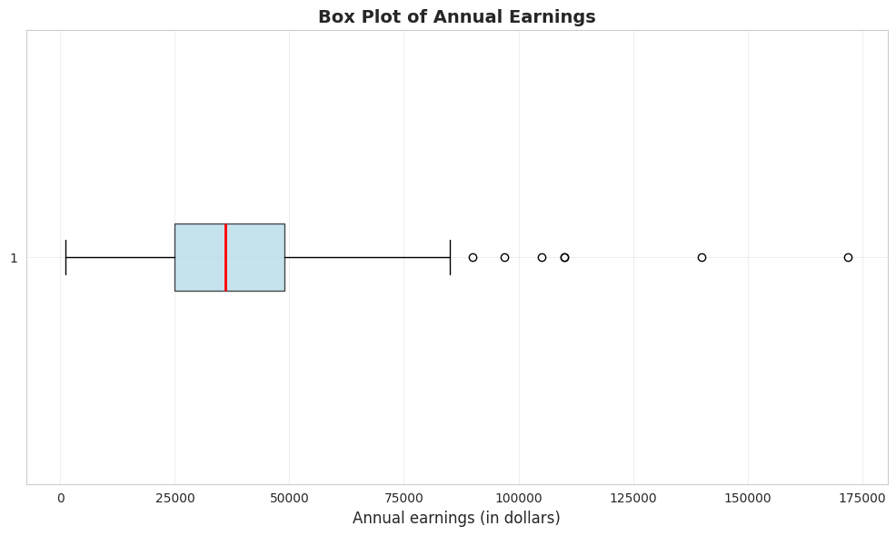
📊 The box plot shows:
- Most earnings are between $25,000 and $50,000 (the box)
- The median ($36,000) is closer to the lower quartile
- Several high-earning outliers on the right
What the box plot reveals:
1. The Box (Interquartile Range):
Extends from $25,000 (Q1) to $49,000 (Q3)
Contains the middle 50% of earners
Width of $24,000 shows moderate spread in the middle
2. The Red Line (Median):
Located at $36,000
Positioned closer to the LOWER edge of the box
This leftward position confirms right skewness
3. The Whiskers:
Lower whisker extends to $1,050 (minimum)
Upper whisker extends to outliers
Right whisker is MUCH longer than left whisker (asymmetry)
4. The Outliers (dots on right):
Several points beyond the upper whisker
Represent high earners (likely $100k+)
Maximum at $172,000 is an extreme outlier
Visual insights:
NOT symmetric: If symmetric, median would be in center of box
Right tail dominates: Upper whisker + outliers extend much farther than lower whisker
Concentration: Most data packed in the 25k-49k range
Rare extremes: A few very high earners create the long right tail
Comparison to summary statistics:
Box plot VISUALLY confirms what skewness (1.71) told us numerically
Quartiles (25k, 36k, 49k) match the box structure
Outliers explain why kurtosis (4.32) is high—heavy tails
Economic story: The typical woman in this sample earns 25k-49k, but a small group of high earners (doctors, lawyers, executives?) creates substantial inequality within this age-30 cohort.
Transition: Now that we’ve calculated summary statistics for earnings data, let’s explore how visualizations can reveal patterns that numbers alone might miss. Charts make distributions, outliers, and trends immediately visible.
2.2 Charts for Numerical Data
Beyond summary statistics, visualizations reveal patterns in data that numbers alone might miss.
Common charts for numerical data:
Histogram: Shows the frequency distribution by grouping data into bins
Kernel density estimate: A smoothed histogram that estimates the underlying continuous distribution
Line chart: For ordered data (especially time series)
Bin width matters: Wider bins give a coarse overview; narrower bins show more detail but can be noisy.
Histograms with Different Bin Widths
# Create histograms with different bin widthsfig, axes = plt.subplots(1, 2, figsize=(14, 5))# Panel A: Wider bins ($15,000)axes[0].hist(earnings, bins=range(0, int(earnings.max()) +15000, 15000), edgecolor='black', alpha=0.7, color='steelblue')axes[0].set_xlabel('Annual Earnings (in dollars)', fontsize=11)axes[0].set_ylabel('Frequency', fontsize=11)axes[0].set_title('Panel A: Bin width = $15,000', fontsize=12, fontweight='bold')axes[0].grid(True, alpha=0.3)# Panel B: Narrower bins ($7,500)axes[1].hist(earnings, bins=range(0, int(earnings.max()) +7500, 7500), edgecolor='black', alpha=0.7, color='steelblue')axes[1].set_xlabel('Annual Earnings (in dollars)', fontsize=11)axes[1].set_ylabel('Frequency', fontsize=11)axes[1].set_title('Panel B: Bin width = $7,500', fontsize=12, fontweight='bold')axes[1].grid(True, alpha=0.3)plt.suptitle('Histograms of Annual Earnings', fontsize=14, fontweight='bold', y=1.02)plt.tight_layout()plt.show()print("\n📊 Comparing bin widths:")print(" - Panel A (wider bins): Shows overall shape—most earnings are $15k-$45k")print(" - Panel B (narrower bins): Reveals more detail—peaks around $25k-$30k")
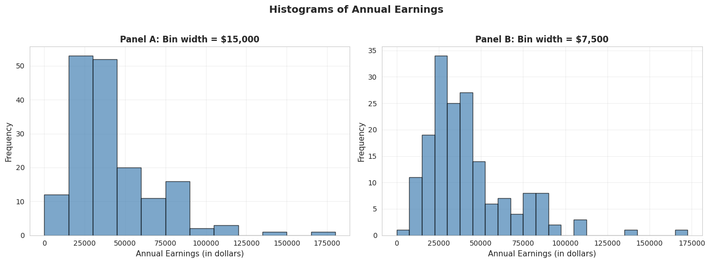
📊 Comparing bin widths:
- Panel A (wider bins): Shows overall shape—most earnings are $15k-$45k
- Panel B (narrower bins): Reveals more detail—peaks around $25k-$30k
Panel A: Wider bins ($15,000):
Reveals overall shape: Right-skewed distribution with long right tail
Peak location: Highest bar is in the $15k-$30k range
Pattern: Frequencies decline as earnings increase
Advantages: Simple, clear overall pattern, less “noisy”
Disadvantages: Hides fine details, obscures multiple modes
Panel B: Narrower bins ($7,500):
Reveals more detail: Multiple peaks visible within the distribution
Peak location: Clearer concentration around $22.5k-$30k
Secondary peaks: Visible around $37.5k-$45k (possible clustering at round numbers?)
Advantages: Shows fine structure, reveals potential clustering
Disadvantages: More “jagged,” can look noisy
Key observations across both panels:
Right skewness confirmed: Both histograms show long right tail extending to $172,000
Modal region: Most common earnings are in the $15k-$45k range
This contains ~75% of observations
Consistent with Q1 ($25k) and Q3 ($49k)
Sparse right tail: Very few observations above $90k
But these high earners substantially influence the mean
This is why mean ($41,413) > median ($36,000)
Bin width matters: - Too wide: Oversimplifies, may miss important features
Too narrow: Introduces noise, harder to see overall pattern
Rule of thumb: Try multiple bin widths to understand your data
Economic interpretation: The clustering in the $25k-$45k range likely reflects:
Entry-level professional salaries for college graduates
Regional wage variations within the sample
Occupational differences (teachers vs. nurses vs. business professionals)
Experience effects (all are age 30, but different career progressions)
Statistical lesson: Always experiment with bin widths in histograms—different choices reveal different aspects of the data!
Key Concept 2.2: Histograms and Density Plots
Histograms visualize distributions using bins whose width determines the level of detail. Kernel density estimates provide smooth approximations of the underlying distribution, while line charts are ideal for time series data to show trends and patterns over time.
Kernel Density Estimate
A kernel density estimate (KDE) is a smoothed version of a histogram. It estimates the underlying continuous probability density function.
Advantages:
Smooth, continuous curve (no arbitrary bin edges)
Easier to see the overall shape
Can compare to theoretical distributions (e.g., normal distribution)
How it works: Instead of fixed bins, KDE uses overlapping “windows” that give more weight to nearby observations.
# Create kernel density estimatefig, ax = plt.subplots(figsize=(10, 6))earnings.plot.kde(ax=ax, linewidth=2, color='#22d3ee', bw_method=0.3)ax.set_xlabel('Annual Earnings (in dollars)', fontsize=12)ax.set_ylabel('Density', fontsize=12)ax.set_title('Kernel Density Estimate of Earnings', fontsize=14, fontweight='bold')ax.grid(True, alpha=0.3)plt.tight_layout()plt.show()print("\n📊 The KDE shows:")print(" - Clear right skew (long tail to the right)")print(" - Peak around $30,000-$35,000")print(" - Distribution is NOT normal (normal would be symmetric and bell-shaped)")
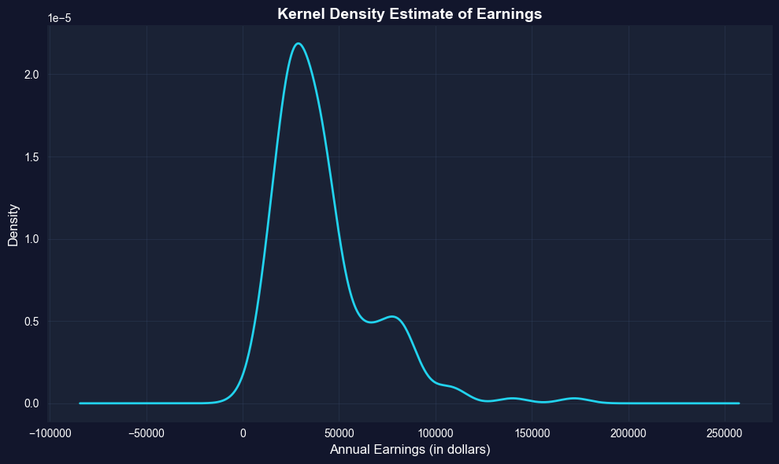
📊 The KDE shows:
- Clear right skew (long tail to the right)
- Peak around $30,000-$35,000
- Distribution is NOT normal (normal would be symmetric and bell-shaped)
What is KDE showing?
The KDE is a smooth, continuous estimate of the probability density function—think of it as a “smoothed histogram without arbitrary bins.”
Key features of the earnings KDE:
1. Peak (Mode):
Highest density around $30,000-$35,000
This is the most “probable” earnings level
Slightly below the median ($36,000), consistent with right skew
2. Shape:
Clear right skew: Long tail extending to $172,000
NOT bell-shaped: Would be symmetric if normally distributed
Unimodal: Single dominant peak (not bimodal)
Steep left side: Density drops quickly below $20k
Gradual right side: Density tapers slowly above $50k
3. Tail behavior:
Left tail: Short and bounded (can’t go below ~$0)
Right tail: Long and heavy (extends to $172k)
Asymmetry ratio: Right tail is ~5× longer than left tail
4. Concentration:
Most density (probability mass) is between $15k-$60k
Above $80k, density is very low but not zero
This confirms that high earners are rare but present
Comparison to normal distribution: If earnings were normally distributed, the KDE would be:
Symmetric (it’s not—it’s right-skewed)
Bell-shaped (it’s not—it’s asymmetric)
Same mean and median (they differ by $5,413)
Unimodal (it’s not—there is another peak around $70k)
Advantages of KDE over histograms:
No arbitrary bins: Smooth curve independent of bin choices
Shows probability density: Y-axis represents likelihood, not counts
Easier to compare: Can overlay multiple KDEs (e.g., male vs. female earnings)
Professional appearance: Smooth curves for publications
Statistical insight: The KDE reveals that earnings are NOT normally distributed—they follow a log-normal-like distribution common in economic data. This justifies logarithmic transformations (see Section 2.5) for statistical modeling.
Practical implication: When predicting earnings, the “most likely” value is around $30k-$35k, NOT the mean ($41,413). The mean is inflated by rare high earners.
Time Series Plot
Line charts are ideal for time series data—observations ordered by time. They show how a variable changes over time.
Example: U.S. real GDP per capita from 1959 to 2020 (in constant 2012 dollars). This measures average economic output per person, adjusted for inflation.
# Load GDP datadata_gdp = pd.read_stata(GITHUB_DATA_URL +'AED_REALGDPPC.DTA')print("GDP Data Summary:")print(data_gdp[['realgdppc', 'year']].describe())# Create time series plotfig, ax = plt.subplots(figsize=(12, 6))ax.plot(data_gdp['daten'], data_gdp['realgdppc'], linewidth=2, color='#22d3ee')ax.set_xlabel('Year', fontsize=12)ax.set_ylabel('Real GDP per capita (in 2012 dollars)', fontsize=12)ax.set_title('U.S. Real GDP per Capita', fontsize=14, fontweight='bold')ax.grid(True, alpha=0.3)plt.tight_layout()plt.show()print("\n📊 Key observations:")print(" - Real GDP per capita TRIPLED from 1959 to 2019")print(" - Steady upward trend (economic growth)")print(" - Dips during recessions (early 1980s, 2008-2009, 2020)")
GDP Data Summary:
realgdppc year
count 245.000000 245.000000
mean 37050.496094 1989.126587
std 12089.684570 17.717857
min 17733.257812 1959.000000
25% 26562.724609 1974.000000
50% 36929.011719 1989.000000
75% 49318.171875 2004.000000
max 58392.453125 2020.000000
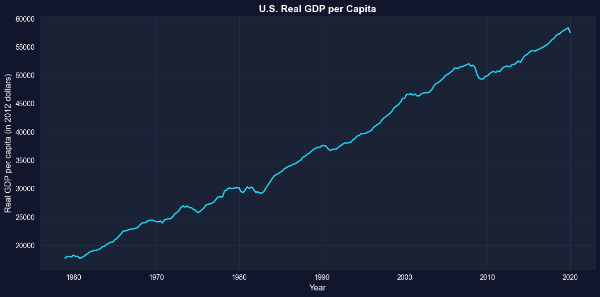
📊 Key observations:
- Real GDP per capita TRIPLED from 1959 to 2019
- Steady upward trend (economic growth)
- Dips during recessions (early 1980s, 2008-2009, 2020)
What this chart shows:
U.S. real GDP per capita from 1959 to 2020, measured in constant 2012 dollars (inflation-adjusted).
Key trends observed:
1. Long-run growth:
1959: ~$17,000 per person
2020: ~$60,000 per person
Total growth: 253% increase (3.5× larger)
Annual growth rate: ~2.1% per year (compound)
2. Business cycle patterns (recessions visible as dips):
Living standards: GDP per capita measures average prosperity
Real vs. nominal: Chart uses 2012 dollars, so it’s REAL growth, not inflation
Per capita matters: Total GDP could grow just from population increase; per capita shows individual prosperity
Statistical lesson: Time series plots are essential for understanding economic trends, cycles, and structural breaks that cross-sectional data would miss.
Key Concept 2.3: Time Series Visualization
Line charts display time-ordered data, revealing trends, cycles, and structural breaks. For economic time series, visualizing the full historical context helps identify patterns like recessions, growth periods, and policy impacts.
Transition: The previous section focused on visualizing single numerical variables. Now we shift to categorical breakdowns—how to display numerical data when it’s naturally divided into groups or categories (like health spending by service type).
Now that we can visualize single-variable distributions, let’s see how distributions differ across categories.
2.3 Charts for Numerical Data by Category
Sometimes numerical data are naturally divided into categories. For example, total health expenditures broken down by type of service.
Bar charts (or column charts) are the standard visualization:
Each category gets a bar
Bar height represents the category’s value
Useful for comparing values across categories
Example: U.S. health expenditures in 2018 totaled $3,653 billion (18% of GDP), split across 13 categories.
Health Expenditure Categories (2018)
category expenditures cat_short exp_short
0 Hospital 1192 Hospital 1192.0
1 Physician and clinical 726 Physician 726.0
2 Other Professional 104 Other 104.0
3 Dental 136 Drugs 136.0
4 Other Health & Personal 192 NaN
5 Home Health Care 102 NaN
6 Nursing Care 169 NaN
7 Drugs & Supplies 456 NaN
8 Govt. Administration 48 NaN
9 Net Cost Insurance 259 NaN
10 Govt. Public Health 94 NaN
11 Noncommercial Research 53 NaN
12 Structures & Equipment 122 NaN
Total expenditures: $3,653 billion
Bar Chart
# Create bar chart (sorted by expenditure)fig, ax = plt.subplots(figsize=(12, 6))data_health_sorted = data_health.sort_values('expenditures', ascending=False)bars = ax.bar(range(len(data_health_sorted)), data_health_sorted['expenditures'], color='steelblue', edgecolor='black', alpha=0.7)ax.set_xticks(range(len(data_health_sorted)))ax.set_xticklabels(data_health_sorted['category'], rotation=45, ha='right', fontsize=10)ax.set_ylabel('Expenditures (in $ billions)', fontsize=12)ax.set_title('U.S. Health Expenditures by Category (2018)', fontsize=14, fontweight='bold')ax.grid(True, alpha=0.3, axis='y')plt.tight_layout()plt.show()print("\n📊 Top 3 categories:")print(f" 1. {data_health_sorted.iloc[0]['category']}: ${data_health_sorted.iloc[0]['expenditures']:.0f}B")print(f" 2. {data_health_sorted.iloc[1]['category']}: ${data_health_sorted.iloc[1]['expenditures']:.0f}B")print(f" 3. {data_health_sorted.iloc[2]['category']}: ${data_health_sorted.iloc[2]['expenditures']:.0f}B")
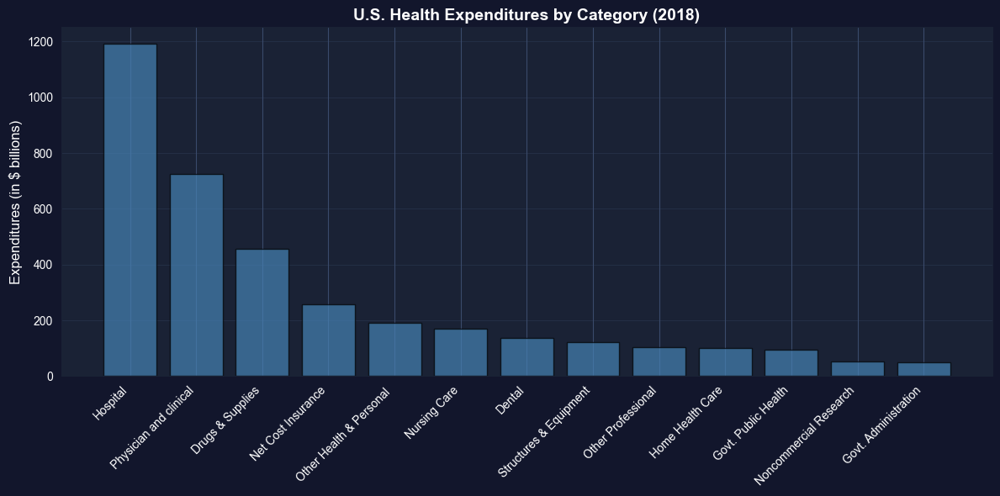
📊 Top 3 categories:
1. Hospital: $1192B
2. Physician and clinical: $726B
3. Drugs & Supplies: $456B
Total U.S. health spending in 2018: $3,653 billion (18% of GDP)
Top 5 categories (ranked by spending):
1. Hospital care: $1,192 billion (32.6%)
By far the largest category
Inpatient care, emergency rooms, outpatient hospital services
Dominated by labor costs (nurses, doctors, staff) and overhead
2. Physician and clinical services: $726 billion (19.9%)
Doctor visits, outpatient clinics, medical specialists
Second-largest but still 39% less than hospitals
Growing due to aging population and chronic disease management
3. Drugs and supplies: $456 billion (12.5%)
Prescription drugs, over-the-counter medications, medical supplies
Controversial due to high U.S. drug prices vs. other countries
Rising rapidly due to specialty biologics and new therapies
4. Net cost of insurance: $259 billion (7.1%)
Administrative costs of private health insurance
Overhead, marketing, profit margins
Does not include government administration (separate category)
5. Other health and personal: $192 billion (5.3%)
Various services not classified elsewhere
Home health aides, personal care, etc.
Bottom categories:
Government administration: $48 billion (Medicare, Medicaid overhead)
Noncommercial research: $53 billion (NIH, university research)
Government public health: $94 billion (CDC, state/local health departments)
Key insights:
1. Hospital dominance:
Hospitals alone account for nearly 1/3 of all health spending
More than physicians, drugs, and nursing care COMBINED
Reflects high fixed costs of hospital infrastructure
2. Concentration:
Top 3 categories (Hospital, Physician, Drugs) = 65% of total
Middle 50% of spending across just 3 categories
Long tail of smaller categories
3. Administrative costs:
Insurance administration ($259B) + Government admin ($48B) = $307B total
That’s 8.4% of health spending just on paperwork and administration
For comparison: Administrative costs are ~2% in single-payer systems
International comparison: U.S. spends ~18% of GDP on healthcare vs. 9-12% in other developed countries, yet doesn’t have better health outcomes. Much debate centers on the efficiency of this spending.
Statistical lesson: Bar charts are ideal for comparing categorical data—they make it immediately obvious that hospital care dominates U.S. health spending.
Key Concept 2.4: Bar Charts for Categorical Data
Bar charts and column charts effectively display categorical data by using bar length to represent values. This makes comparisons across categories immediate and intuitive, highlighting which categories dominate.
2.4 Charts for Categorical Data
Categorical data consist of observations that fall into discrete categories (e.g., fishing site choice: beach, pier, private boat, charter boat).
How to summarize:
Frequency table: Count observations in each category
Relative frequency: Express as proportions or percentages
How to visualize:
Pie chart: Slices represent proportion of total
Bar chart: Bars represent frequency or proportion
Example: Fishing site chosen by 1,182 recreational fishers (4 possible sites).
# Load fishing datadata_fishing = pd.read_stata(GITHUB_DATA_URL +'AED_FISHING.DTA')# Create frequency tablemode_freq = data_fishing['mode'].value_counts()mode_relfreq = data_fishing['mode'].value_counts(normalize=True)mode_table = pd.DataFrame({'Frequency': mode_freq,'Relative Frequency (%)': (mode_relfreq *100).round(2)})print("Frequency Distribution of Fishing Mode")print(mode_table)print(f"\nTotal observations: {len(data_fishing):,}")
Frequency Distribution of Fishing Mode
Frequency Relative Frequency (%)
mode
charter 452 38.24
private 418 35.36
pier 178 15.06
beach 134 11.34
Total observations: 1,182
Pie Chart
# Create pie chartfig, ax = plt.subplots(figsize=(8, 8))colors = plt.cm.Set3(range(len(mode_freq)))wedges, texts, autotexts = ax.pie(mode_freq.values, labels=mode_freq.index, autopct='%1.1f%%', colors=colors, startangle=90, textprops={'fontsize': 11})ax.set_title('Distribution of Fishing Modes', fontsize=14, fontweight='bold', pad=20)plt.tight_layout()plt.show()print("\n📊 Most popular fishing modes:")print(f" 1. {mode_freq.index[0]}: {mode_freq.values[0]:,} ({mode_relfreq.values[0]*100:.1f}%)")print(f" 2. {mode_freq.index[1]}: {mode_freq.values[1]:,} ({mode_relfreq.values[1]*100:.1f}%)")
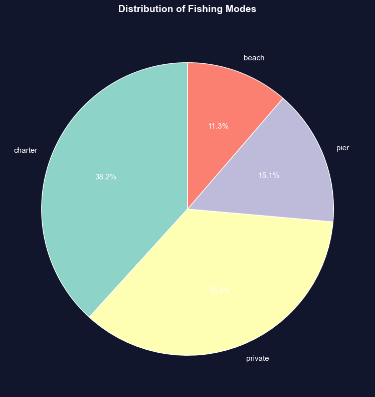
📊 Most popular fishing modes:
1. charter: 452 (38.2%)
2. private: 418 (35.4%)
Sample: 1,182 recreational fishers choosing among 4 fishing sites
Distribution of choices:
1. Charter boat: 452 fishers (38.2%)
Most popular choice
Guided fishing trip with captain and crew
Higher cost but convenience, equipment provided, and expert guidance
2. Private boat: 418 fishers (35.4%)
Second-most popular (nearly tied with charter)
Requires boat ownership or rental
More freedom and privacy, but higher upfront costs
3. Pier: 178 fishers (15.1%)
Third choice
Low-cost option (minimal equipment needed)
Accessible, but limited fishing locations
4. Beach: 134 fishers (11.3%)
Least popular
Lowest cost and most accessible
But more limited fishing success rates
Key patterns:
1. Boat fishing dominates:
Charter + Private = 870 fishers (73.6%)
Nearly 3/4 of fishers prefer boat-based fishing
Suggests willingness to pay premium for better fishing access
2. Shore fishing is minority:
Pier + Beach = 312 fishers (26.4%)
About 1/4 choose shore-based options
Likely cost-constrained or casual fishers
3. Charter vs. private nearly equal:
Charter: 452 (38.2%)
Private: 418 (35.4%)
Difference: only 34 fishers (2.9%)
Suggests these are close substitutes for many fishers
4. Large variation in popularity:
Most popular (Charter) is 3.4× more popular than least popular (Beach)
Not evenly distributed across categories
Strong revealed preferences for certain modes
Economic interpretation:
Why do people choose different modes?
Charter boats chosen for:
No boat ownership required
Expert captain knows best spots
Social experience (fishing with others)
Equipment and bait provided
Private boats chosen for:
Flexibility in timing and location
Privacy and control
Cost-effective if you fish frequently
Pride of ownership
Pier/Beach chosen for:
Budget constraints
No transportation to boat launch
Casual, occasional fishing
Family-friendly accessibility
Revealed preference theory: The distribution reveals what fishers VALUE:
73.6% value boat access enough to pay for it
38.2% value convenience of charter over ownership
26.4% value low cost/accessibility over catch rates
Statistical lesson: For categorical data, frequency tables and pie charts reveal the distribution of choices. This is the foundation for discrete choice models (Chapter 15) that estimate why people make different choices.
Key Concept 2.5: Frequency Tables and Pie Charts
Categorical data are summarized using frequency tables showing counts and percentages. Pie charts display proportions visually, with slice area corresponding to relative frequency. Bar charts are often preferred over pie charts for easier comparison of categories.
Transition: Visualization helps us see patterns, but sometimes the raw data obscures relationships. Data transformations (like logarithms and z-scores) can normalize skewed distributions, stabilize variance, and make statistical modeling more effective.
Having explored charts for both numerical and categorical data, let’s now examine how data transformations can reveal hidden patterns.
2.5 Data Transformation
Data transformations can make patterns clearer or satisfy statistical assumptions.
(a) Logarithmic transformation is especially useful for right-skewed economic data (prices, income, wealth): \[\text{log of earnings} = \ln(\text{earnings})\]
Why use logs?
Converts right-skewed data to a more symmetric distribution
Makes multiplicative relationships additive
Coefficients have percentage interpretation (see Chapter 9)
Reduces influence of extreme values
(b) Standardized scores (z-scores) are another common transformation: \[z_i = \frac{x_i - \bar{x}}{s}\]
This centers data at 0 with standard deviation 1—useful for comparing variables on different scales.
Log Transformation Effect
# Create log transformationdata_earnings['lnearnings'] = np.log(data_earnings['earnings'])print("Comparison of earnings and log(earnings):")print(data_earnings[['earnings', 'lnearnings']].describe())
Comparison of earnings and log(earnings):
earnings lnearnings
count 171.000000 171.000000
mean 41412.690058 10.457638
std 25527.053396 0.622062
min 1050.000000 6.956545
25% 25000.000000 10.126631
50% 36000.000000 10.491274
75% 49000.000000 10.799367
max 172000.000000 12.055250
# Compare original and log-transformed earningsfig, axes = plt.subplots(1, 2, figsize=(14, 5))# Panel A: Original earningsaxes[0].hist(data_earnings['earnings'], bins=30, edgecolor='black', alpha=0.7, color='steelblue')axes[0].set_xlabel('Annual Earnings (in dollars)', fontsize=11)axes[0].set_ylabel('Frequency', fontsize=11)axes[0].set_title('Panel A: Earnings', fontsize=12, fontweight='bold')axes[0].grid(True, alpha=0.3)# Panel B: Log earningsaxes[1].hist(data_earnings['lnearnings'], bins=30, edgecolor='black', alpha=0.7, color='coral')axes[1].set_xlabel('Log of Annual Earnings', fontsize=11)axes[1].set_ylabel('Frequency', fontsize=11)axes[1].set_title('Panel B: Log(Earnings)', fontsize=12, fontweight='bold')axes[1].grid(True, alpha=0.3)plt.suptitle('Log Transformation Effects', fontsize=14, fontweight='bold', y=1.02)plt.tight_layout()plt.show()print("\n📊 Effect of log transformation:")print(" - Original earnings: Highly right-skewed")print(" - Log(earnings): Much more symmetric, closer to normal")print(f" - Skewness reduced from {stats.skew(earnings):.2f} to {stats.skew(data_earnings['lnearnings']):.2f}")
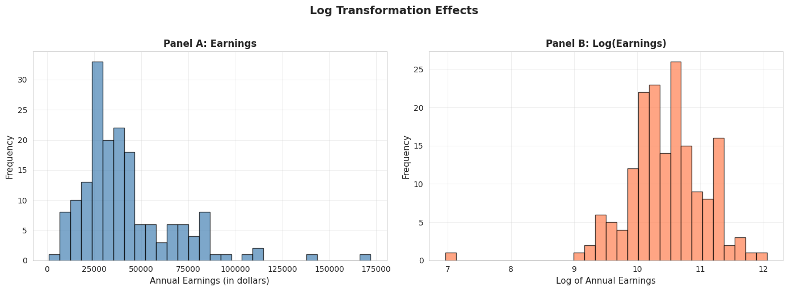
📊 Effect of log transformation:
- Original earnings: Highly right-skewed
- Log(earnings): Much more symmetric, closer to normal
- Skewness reduced from 1.71 to -0.91
Panel A: Original Earnings (dollars)
Shape: Strongly right-skewed
Skewness: 1.71 (highly asymmetric)
Mean: $41,412.69
Median: $36,000.00
Std Dev: $25,527.05 (62% of mean)
Range: $1,050 to $172,000
Panel B: Log(Earnings) (natural logarithm)
Shape: Much more symmetric, approximately normal
Skewness: -0.91 (nearly symmetric, slight left skew)
Mean: 10.46 (log dollars)
Median: 10.49 (log dollars)
Std Dev: 0.62 (only 6% of mean)
Range: 6.96 to 12.06
What the transformation achieved:
1. Reduced skewness dramatically:
Original skewness: 1.71 → Log skewness: -0.91
Reduction of 122% in absolute skewness
Now nearly symmetric (close to 0)
2. Normalized the distribution:
Original: Long right tail, NOT normal
Log: Bell-shaped, MUCH closer to normal distribution
This matters for statistical tests that assume normality
3. Equalized variance (stabilization):
Original std dev: 62% of mean (high coefficient of variation)
Log std dev: 6% of mean (much more stable)
High earners no longer dominate the variance
4. Brought mean and median closer:
Original: Mean - Median = $5,413 (15% gap)
Log: Mean - Median = -0.03 (0.3% gap)
Nearly identical in log scale
Why use log transformation for earnings?
Statistical reasons:
Normality: Many statistical tests (t-tests, ANOVA, regression) assume normal distribution
Variance stabilization: Constant variance across income levels
Linearity: Log models often fit better (log-linear relationships)
Outlier reduction: Compresses extreme values
Economic reasons:
Multiplicative relationships: Income growth is often proportional (e.g., 10% raise)
Percentage interpretation: A 1-unit increase in log(income) ≈ 100% increase in income
Economic theory: Utility functions often logarithmic (diminishing marginal utility)
Cross-country comparisons: Log scale makes it easier to compare countries with vastly different GDP levels
How to interpret log(earnings) = 10.46?
Take exponential: e^10.46 = $34,762
This is close to the median earnings ($36,000)
Each 1-unit increase in log(earnings) ≈ 2.718× increase in earnings
Difference of 1 in log scale = 2.72× in dollar scale
When NOT to use log transformation:
When data include zero or negative values (log undefined)
When you care about absolute differences (e.g., policy targeting specific dollar amounts)
When original scale is more interpretable for your audience
Statistical lesson: Log transformation is one of the most powerful tools in econometrics for dealing with skewed, multiplicative data like income, prices, GDP, and wealth.
Key Concept 2.6: Logarithmic Transformations
Natural logarithm transformations convert right-skewed economic data (earnings, prices, wealth) to more symmetric distributions, facilitating analysis. Z-scores standardize data to have mean 0 and standard deviation 1, enabling comparison across different scales.
Transition: Time series data presents unique challenges—seasonal fluctuations, inflation, and population growth can mask underlying trends. Specialized transformations like moving averages and seasonal adjustment are essential for time-ordered economic data.
2.6 Data Transformations for Time Series Data
Time series data often require special transformations: 1. Moving averages: Smooth short-term fluctuations by averaging over several periods
Example: 11-month moving average removes monthly noise
Example: Home sales peak in summer, drop in winter
Real vs. nominal adjustments: Adjust for inflation using price indices
Real values are in constant dollars (e.g., 2012 dollars)
Per capita adjustments: Divide by population to account for population growth
Example: Monthly U.S. home sales (2005-2015) showing original, moving average, and seasonally adjusted series.
# Load monthly home sales datadata_homesales = pd.read_stata(GITHUB_DATA_URL +'AED_MONTHLYHOMESALES.DTA')# Filter data for year >= 2005data_homesales_filtered = data_homesales[data_homesales['year'] >=2005]print("Home sales data (2005 onwards):")print(data_homesales_filtered[['year', 'exsales', 'exsales_ma11', 'exsales_sa']].describe())
Home sales data (2005 onwards):
year exsales exsales_ma11 exsales_sa
count 121.000000 121.000000 116.000000 121.000000
mean 2009.545410 416851.239669 418300.125000 418071.625000
std 2.915476 111931.278110 81757.234375 83326.734375
min 2005.000000 218000.000000 324818.187500 287500.000000
25% 2007.000000 347000.000000 357613.625000 355833.343750
50% 2010.000000 401000.000000 394000.000000 401666.656250
75% 2012.000000 473000.000000 436727.281250 440833.343750
max 2015.000000 754000.000000 608545.437500 605000.000000
Time Series Transformations for Home Sales
# Create time series plots with transformationsfig, axes = plt.subplots(2, 1, figsize=(12, 10))# Panel A: Original and Moving Averageaxes[0].plot(data_homesales_filtered['daten'], data_homesales_filtered['exsales'], linewidth=2, label='Original', color='#22d3ee')axes[0].plot(data_homesales_filtered['daten'], data_homesales_filtered['exsales_ma11'], linewidth=2, linestyle='--', label='11-month Moving Average', color='red')axes[0].set_xlabel('Year', fontsize=11)axes[0].set_ylabel('Monthly Home Sales', fontsize=11)axes[0].set_title('Panel A: Original Series and Moving Average', fontsize=12, fontweight='bold')axes[0].legend()axes[0].grid(True, alpha=0.3)# Panel B: Original and Seasonally Adjustedaxes[1].plot(data_homesales_filtered['daten'], data_homesales_filtered['exsales'], linewidth=2, label='Original', color='#22d3ee')axes[1].plot(data_homesales_filtered['daten'], data_homesales_filtered['exsales_sa'], linewidth=2, linestyle='--', label='Seasonally Adjusted', color='green')axes[1].set_xlabel('Year', fontsize=11)axes[1].set_ylabel('Monthly Home Sales', fontsize=11)axes[1].set_title('Panel B: Original Series and Seasonally Adjusted', fontsize=12, fontweight='bold')axes[1].legend()axes[1].grid(True, alpha=0.3)plt.suptitle('Time Series Transformations for Home Sales', fontsize=14, fontweight='bold', y=0.995)plt.tight_layout()plt.show()print("\n📊 Observations:")print(" - Original series: Jagged with seasonal peaks (summer) and troughs (winter)")print(" - Moving average: Smooth curve shows underlying trend (housing crash 2007-2011)")print(" - Seasonally adjusted: Removes seasonal pattern, reveals trend and cycles")
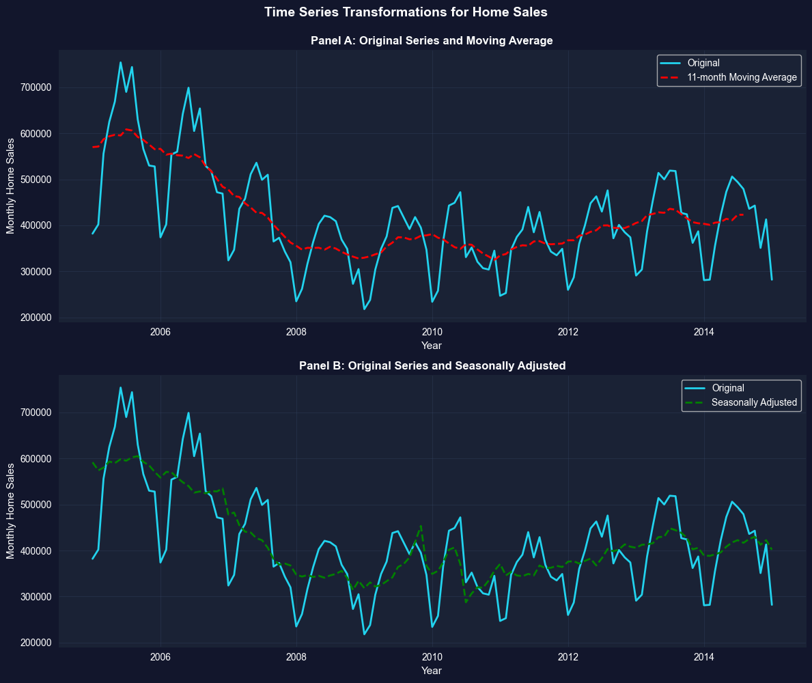
📊 Observations:
- Original series: Jagged with seasonal peaks (summer) and troughs (winter)
- Moving average: Smooth curve shows underlying trend (housing crash 2007-2011)
- Seasonally adjusted: Removes seasonal pattern, reveals trend and cycles
Data: Monthly U.S. existing home sales (2005-2015)
Three series compared:
Original series (blue solid line)
11-month moving average (red dashed line, Panel A)
Seasonally adjusted (green dashed line, Panel B)
Panel A: Original vs. Moving Average
What the original series shows:
High volatility: Sharp month-to-month fluctuations
Both together: Comprehensive understanding of time series dynamics
Practical implication: When the news reports “Home sales up 5% this month,” ALWAYS check if it’s seasonally adjusted. Raw data might just show normal summer increase!
Key Concept 2.7: Time Series Transformations
Time series data often requires transformations: moving averages smooth short-term fluctuations, seasonal adjustment removes recurring patterns, real values adjust for inflation, per capita values adjust for population, and growth rates measure proportionate changes. These transformations reveal underlying trends and enable meaningful comparisons.
GDP Comparisons - Nominal vs Real
# Compare nominal and real GDPfig, axes = plt.subplots(1, 2, figsize=(16, 6))# Panel A: GDP and Real GDPaxes[0].plot(data_gdp['daten'], data_gdp['gdp'], linewidth=2, label='GDP (nominal)', color='#22d3ee')axes[0].plot(data_gdp['daten'], data_gdp['realgdp'], linewidth=2, linestyle='--', label='Real GDP (2012 dollars)', color='red')axes[0].set_xlabel('Year', fontsize=11)axes[0].set_ylabel('GDP (in $ billions)', fontsize=11)axes[0].set_title('Panel A: GDP and Real GDP', fontsize=12, fontweight='bold')axes[0].legend()axes[0].grid(True, alpha=0.3)# Panel B: GDP per capita and Real GDP per capitaaxes[1].plot(data_gdp['daten'], data_gdp['gdppc'], linewidth=2, label='GDP per capita (nominal)', color='#22d3ee')axes[1].plot(data_gdp['daten'], data_gdp['realgdppc'], linewidth=2, linestyle='--', label='Real GDP per capita (2012 dollars)', color='red')axes[1].set_xlabel('Year', fontsize=11)axes[1].set_ylabel('GDP per capita (in dollars)', fontsize=11)axes[1].set_title('Panel B: GDP per Capita and Real GDP per Capita', fontsize=12, fontweight='bold')axes[1].legend()axes[1].grid(True, alpha=0.3)plt.suptitle('GDP Comparisons - Nominal vs Real', fontsize=14, fontweight='bold', y=1.0)plt.tight_layout()plt.show()print("\n📊 Why adjust for inflation and population?")print(" - Nominal GDP: Inflated by price increases (not just real growth)")print(" - Real GDP: Removes inflation, shows true output growth")print(" - Per capita: Accounts for population growth, measures individual prosperity")
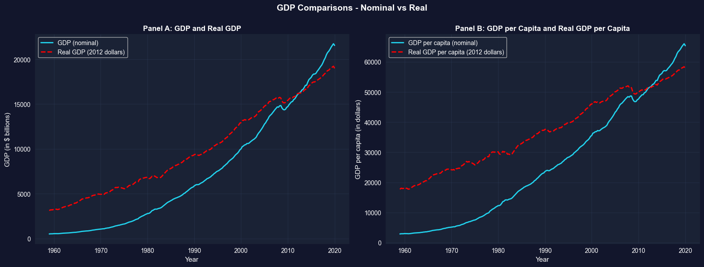
📊 Why adjust for inflation and population?
- Nominal GDP: Inflated by price increases (not just real growth)
- Real GDP: Removes inflation, shows true output growth
- Per capita: Accounts for population growth, measures individual prosperity
Key Takeaways
Summary Statistics and Data Distributions:
Summary statistics (mean, median, standard deviation, quartiles, skewness, kurtosis) efficiently describe large datasets by quantifying central tendency and dispersion
The mean is sensitive to outliers; the median is robust and preferred for skewed distributions
Standard deviation measures typical distance from the mean; for normal distributions, ~68% of data falls within 1 standard deviation, ~95% within 2
Skewness measures asymmetry (positive for right-skewed data common in economics like earnings and wealth); guideline: |skewness| > 1 indicates strong skewness
Kurtosis measures tail heaviness; excess kurtosis > 0 indicates fatter tails than the normal distribution
Histograms display distributions of numerical data using bins; bin width affects detail level (smaller bins show more detail but may be noisier)
Kernel density estimates provide smooth approximations of underlying continuous distributions without arbitrary bin choices
Line charts are ideal for time series data to reveal trends, cycles, and structural breaks over time
Bar charts and column charts effectively display categorical data, with bar length representing values for easy comparison
Pie charts show proportions for categorical data, though bar charts often facilitate easier comparison across categories
Choosing the right visualization depends on data type (numerical vs. categorical), dimensionality (univariate vs. categorical breakdown), and whether data are time-ordered
Data Transformations and Their Applications:
Natural logarithm transformations convert right-skewed economic data (earnings, prices, wealth) to more symmetric distributions, facilitating statistical analysis
Z-scores standardize data to mean 0 and standard deviation 1, enabling comparison across different scales and identifying outliers
Moving averages smooth short-term fluctuations in time series data by averaging over several periods (e.g., 11-month MA removes seasonality)
Seasonal adjustment removes recurring patterns to reveal underlying trends; essential for comparing economic indicators across months/quarters
Real values adjust for price inflation using deflators; per capita values adjust for population size—both are crucial for meaningful comparisons over time
Growth rates measure proportionate changes; distinguish between percentage point changes and percentage changes to avoid confusion
For time series, the change in natural log approximates the proportionate change (useful property: Δln(x) ≈ Δx/x for small changes)
Python Tools and Methods:
pandas provides .describe(), .mean(), .median(), .std(), .quantile() for summary statistics
scipy.stats provides skew() and kurtosis() for distribution shape measures (note: kurtosis() returns excess kurtosis by default)
matplotlib and seaborn enable professional visualizations (histograms, KDE, line charts, box plots, bar charts)
Moving averages can be computed with pandas.rolling().mean(); seasonal adjustment typically requires specialized packages like statsmodels
Next Steps:
Chapter 3: Statistical inference and confidence intervals for the mean
Chapter 5: Bivariate data summary and correlation analysis
Chapter 6-9: Simple linear regression and interpretation
You have now mastered: Calculating and interpreting summary statistics Creating effective visualizations for different data types Applying transformations to reveal patterns and normalize distributions Handling time series data with moving averages and seasonal adjustment
These foundational skills prepare you for inferential statistics and regression analysis in the following chapters!
Practice Exercises
Test your understanding of univariate data analysis with these exercises: Exercise 1: Calculate summary statistics
For the sample {5, 2, 2, 8, 3}, calculate: - (a) Mean
Median
Variance
Standard deviation
Exercise 2: Interpret skewness
A dataset has skewness = -0.85. What does this tell you about the distribution?
Would you expect the mean to be greater than or less than the median? Why?
Exercise 3: Choose visualization types
For each scenario, recommend the best chart type and explain why: - (a) Quarterly GDP growth rates from 2000 to 2025
Market share of 5 smartphone brands
Distribution of household incomes in a city
Monthly temperature readings over a year
Exercise 4: Log transformation
Why is log transformation particularly useful for economic variables like income and GDP?
If log(earnings) increases by 0.5, approximately what percentage increase does this represent in earnings?
Exercise 5: Standard deviation interpretation
A dataset has mean = 50 and standard deviation = 10. If the data are approximately normally distributed: - (a) What percentage of observations fall between 40 and 60?
What percentage fall between 30 and 70?
Exercise 6: Time series transformations
Explain the difference between: - (a) Moving average vs. seasonal adjustment
Nominal GDP vs. Real GDP
Total GDP vs. GDP per capita
Exercise 7: Z-scores
For a sample with mean = 100 and standard deviation = 15: - (a) Calculate the z-score for an observation of 130
Interpret what this z-score means
Exercise 8: Data interpretation
A box plot shows: - Lower quartile (Q1) = 25
Median (Q2) = 35
Upper quartile (Q3) = 60
Calculate: - (a) Interquartile range (IQR)
Describe the skewness based on quartile positions
Case Studies
Case Study 1: Global Labor Productivity Distribution
Research Question: How is labor productivity distributed across countries? Are there distinct groups or is it continuous?
In Chapter 1, you examined relationships between variables—specifically, how productivity relates to capital stock through regression analysis. Now we shift perspective to analyze a single variable—labor productivity—but focus on its distribution across countries rather than its associations.
This case study builds on Chapter 1’s dataset (Convergence Clubs) but asks fundamentally different questions: What does the distribution of productivity look like across the 108 countries in our sample? Is it symmetric or skewed? Have productivity gaps widened or narrowed over time? These distributional questions are central to development economics and understanding global inequality.
By completing this case study, you’ll apply all the univariate analysis tools from Chapter 2 to a real dataset with genuine economic relevance—exploring whether productivity converges globally or if divergence persists.
Key Concept 2.8: Cross-Country Distributions
Cross-country distributions of economic variables (productivity, GDP per capita, income) are typically right-skewed with long upper tails, reflecting substantial inequality between rich and poor countries. Summary statistics like the median are often more representative than the mean for these distributions, and exploring the shape of the distribution reveals whether gaps between countries are widening or narrowing.
Load the Productivity Data
We’ll use the same Convergence Clubs dataset from Chapter 1, but focus exclusively on the labor productivity variable (lp) across countries and years. This gives us 2,700 observations (108 countries × 25 years, from 1990 to 2014) of international productivity.
# Load convergence clubs data (same as Chapter 1)df1 = pd.read_csv("https://raw.githubusercontent.com/quarcs-lab/mendez2020-convergence-clubs-code-data/master/assets/dat.csv", index_col=["country", "year"]).sort_index()# For Chapter 2, focus on labor productivity variableproductivity = df1['lp']print("="*70)print("LABOR PRODUCTIVITY DISTRIBUTION ANALYSIS")print("="*70)print(f"Total observations: {len(productivity)}")print(f"Countries: {len(df1.index.get_level_values('country').unique())}")print(f"Time period: {df1.index.get_level_values('year').min()} to {df1.index.get_level_values('year').max()}")print(f"\nFirst 10 observations (sample):")print(df1[['lp']].head(10))
======================================================================
LABOR PRODUCTIVITY DISTRIBUTION ANALYSIS
======================================================================
Total observations: 2700
Countries: 108
Time period: 1990 to 2014
First 10 observations (sample):
lp
country year
Albania 1990 9959.2344
1991 9093.6943
1992 10188.3060
1993 12432.5870
1994 13007.0080
1995 14813.8990
1996 18248.9860
1997 15008.6750
1998 15001.0220
1999 17351.6020
How to Use These Tasks
Instructions:
Read the task objectives and instructions in each section below
Review the example code structure provided
Create a NEW code cell to write your solution
Follow the structure and fill in the blanks or write complete code
Run and test your code
Answer the interpretation questions
Progressive difficulty:
Tasks 1-2: Guided (fill in specific blanks with _____)
Tasks 4-6: Independent (write full code from outline)
Tip: Type the code yourself rather than copying—it builds understanding!
Task 1: Data Exploration (Guided)
Objective: Load and explore the structure of the global productivity distribution.
Instructions:
Examine the productivity variable’s basic structure (length, data type, any missing values)
Get summary statistics (count, mean, std, min, max)
Display observations for 5 different countries to see variation across countries
Check: Is there variation across countries? Does it seem large or small?
Chapter 2 connection: This applies the concepts from Section 2.1 (Summary Statistics).
Starter code guidance:
Use productivity.describe() for summary statistics
Check for missing values with productivity.isnull().sum()
Use .loc[] or .xs() to select specific countries’ observations
Calculate min and max productivity values globally
Example code structure:
# Task 1: Data Exploration (GUIDED)# Complete the code below by filling in the blanks (_____)# Step 1: Check data structureprint("Data Structure:")print(f"Total observations: {_____}")print(f"Data type: {productivity.dtype}")print(f"Missing values: {_____}")# Step 2: Summary statisticsprint("\n"+"="*70)print("Summary Statistics for Global Productivity")print("="*70)print(productivity.describe())# Step 3: Variation across countries - look at a few countriesprint("\n"+"="*70)print("Productivity across 5 sample countries:")print("="*70)sample_countries = ['Australia', 'Brazil', 'China', 'France', 'Nigeria']for country in sample_countries: country_data = df1.loc[country, 'lp']print(f"\n{country}:")print(f" Mean productivity: {_____:.3f}")print(f" Min: {_____:.3f}, Max: {_____:.3f}")print(f" Range: {_____:.3f}")# Step 4: Global variationprint("\n"+"="*70)print("Global Variation:")print("="*70)min_prod = productivity.min()max_prod = productivity.max()ratio = max_prod / min_prodprint(f"Minimum global productivity: {min_prod:.3f}")print(f"Maximum global productivity: {max_prod:.3f}")print(f"Ratio (max/min): {ratio:.1f}x")print(f"\nInterpretation: The most productive country is {ratio:.0f}× more productive than the least productive country!")
Task 2: Summary Statistics (Semi-guided)
Objective: Calculate comprehensive summary statistics for the global productivity distribution.
Instructions:
Compute mean, median, standard deviation, quartiles (25th, 50th, 75th percentiles)
Calculate skewness and kurtosis for the overall productivity distribution
Identify which countries have the highest and lowest productivity (across all years)
Compare productivity statistics for two time periods: 1990 and 2014
Chapter 2 connection: Applies Section 2.1 (Summary Statistics) and distribution shape measures.
Starter code guidance:
Use .describe() for the main statistics
Use scipy.stats.skew() and scipy.stats.kurtosis() for shape measures
Filter by year: df1.xs(1990, level='year')['lp']
Use .nlargest() and .nsmallest() to find extreme values
Create a comparison table of statistics for different time periods
Example code structure:
# Task 2: Summary Statistics (SEMI-GUIDED)# Complete the code by implementing each step# Step 1: Overall summary statisticsoverall_stats = {'Mean': productivity.mean(),'Median': _____, # Calculate median'Std Dev': _____, # Calculate standard deviation'Skewness': stats.skew(_____),'Kurtosis': _____, # Calculate kurtosis'25th percentile': productivity.quantile(0.25),'75th percentile': productivity.quantile(_____),'IQR': productivity.quantile(0.75) - productivity.quantile(0.25)}for key, value in overall_stats.items(): print(f"{key:20s}: {value:.4f}")# Step 2: Countries with highest/lowest productivityprint("\n"+"="*70)print("Top 5 Most Productive Countries (average across years)")print("="*70)country_means = df1.groupby(_____)['lp'].mean().sort_values(_____)print(country_means.head())print("\n"+"="*70)print("Top 5 Least Productive Countries (average across years)")print("="*70)print(country_means.tail())# Step 3: Compare 1990 vs 2014productivity_1990 = df1.xs(1990, level=_____)['lp']productivity_2014 = df1.xs(_____, level='year')['lp']# Your code here: Create a comparison DataFrame# Hint: Use pd. DataFrame() with statistics for both years# Include: mean, median, std, skewness, min, max
Hints:
Use .median(), .std() for missing statistics
stats.kurtosis() requires the data series as input
.groupby('country') groups by country name
.sort_values(ascending=False) sorts from high to low
.xs(year, level='year') extracts data for a specific year
Task 3: Visualizing Distributions (Semi-guided)
Objective: Create multiple visualizations to understand the shape of the productivity distribution.
Instructions:
Create a histogram of productivity (try different bin widths)
Create a box plot to identify outliers and quartiles
Create a kernel density estimate to see the smooth shape
Compare the original distribution to the log-transformed distribution
Chapter 2 connection: Applies Section 2.2 (Charts for Numerical Data).
Starter code guidance:
Use plt.hist() for histogram with different bin widths (try 10, 15, 20 bins)
Use plt.boxplot() for box plot visualization
Use .plot.kde() for kernel density estimate
Create side-by-side panels to compare original vs log-transformed
Label axes clearly and add titles
Example code structure:
# Task 3: Visualizing Distributions (SEMI-GUIDED)# Create comprehensive visualizations of the productivity distribution# Create a 2x2 figure with 4 subplotsfig, axes = plt.subplots(_____, _____, figsize=(14, 10))# Panel 1: Histogram (original productivity)axes[0, 0].hist(productivity, bins=_____, edgecolor='black', alpha=0.7, color='steelblue')axes[0, 0].set_xlabel(_____, fontsize=11)axes[0, 0].set_ylabel(_____, fontsize=11)axes[0, 0].set_title('Panel 1: Histogram of Productivity (20 bins)', fontsize=12, fontweight='bold')axes[0, 0].grid(True, alpha=0.3)# Panel 2: Box plot (original productivity)axes[0, 1].boxplot(_____, vert=True, patch_artist=True)axes[0, 1].set_ylabel('Labor Productivity', fontsize=11)axes[0, 1].set_title('Panel 2: Box Plot of Productivity', fontsize=12, fontweight='bold')axes[0, 1].grid(True, alpha=0.3, axis='y')# Panel 3: KDE (original productivity)productivity.plot.kde(ax=_____, linewidth=2, color='darkblue')axes[1, 0].set_xlabel('Labor Productivity', fontsize=11)axes[1, 0].set_ylabel('Density', fontsize=11)axes[1, 0].set_title('Panel 3: Kernel Density Estimate', fontsize=12, fontweight='bold')axes[1, 0].grid(True, alpha=0.3)# Panel 4: KDE comparison (original vs log-transformed)# Your code here: Create log-transformed productivitylog_productivity = np.log(productivity)# Your code here: Plot both KDE curves on the same axes# Hint: Use .plot.kde() with label='Original' and label='Log-transformed'# Use different colors and linestyles for clarityplt.suptitle('Figure: Global Productivity Distribution Visualizations', fontsize=14, fontweight='bold', y=1.00)plt.tight_layout()plt.show()
Hints:
plt.subplots(2, 2) creates 2 rows and 2 columns
Try bins=20 for the histogram
Set xlabel to ‘Labor Productivity’
For boxplot, pass the productivity series directly
Use axes[1, 0] to reference the bottom-left panel
For KDE comparison, plot two curves with different colors (e.g., ‘darkblue’ and ‘red’)
Task 4: Comparing Distributions Across Time (More Independent)
Objective: Analyze how the productivity distribution has changed from 1990 to 2014.
Instructions:
Extract productivity data for 1990 and 2014
Calculate summary statistics for each year separately
Create overlapping KDE plots to compare the distributions visually
Analyze: Has the distribution shifted right (convergence/improvement)? Widened (divergence)? Changed shape?
Chapter 2 connection: Applies Section 2.2 (comparing distributions across groups).
Starter code guidance:
Use df1.xs(year, level='year') to extract data for specific years
Create summary statistics tables for comparison
Plot two KDE curves on the same axes with different colors
Use the 25th and 75th percentiles to measure spread
Calculate the coefficient of variation (std/mean) to compare relative dispersion
Example code structure:
# Task 4: Comparing Distributions Across Time (MORE INDEPENDENT)# Analyze how global productivity distribution evolved from 1990 to 2014# Step 1: Extract data for 1990 and 2014prod_1990 = df1.xs(_____, level='year')['lp']prod_2014 = _____ # Extract 2014 data (same pattern as above)# Step 2: Create comparison visualization# Your code here: Create figure with 2 subplots (1 row, 2 columns)# Hint: fig, axes = plt.subplots(1, 2, figsize=(14, 5))# Panel A: Overlapping KDE plots# Your code here: Plot KDE for both years on the same axes# - Use prod_1990.plot.kde() and prod_2014.plot.kde()# - Different colors for each year (e.g., 'darkblue' and 'red')# - Add labels and legend# Panel B: Side-by-side box plots# Your code here: Create box plots for both years# Hint: axes[1].boxplot([prod_1990, prod_2014], labels=['1990', '2014'])# Set different colors for each box using patch_artist=True# Step 3: Calculate comparison statistics# Your code here: Create a DataFrame comparing statistics for both years# Include: mean, median, std, coefficient of variation, skewness, min, max, range# Hint: Use pd.DataFrame() with a dictionary of statistics
Hints:
Coefficient of variation = std / mean (relative dispersion)
Use stats.skew() from scipy.stats for skewness
For KDE plots, use label='1990' and label='2014' for legend
Range = max - min
Questions to consider:
Did mean productivity increase from 1990 to 2014?
Did the spread (std dev) increase or decrease? (Convergence vs divergence)
Did the coefficient of variation change?
Did skewness change?
Task 5: Transformation Analysis (Independent)
Objective: Apply log transformation to productivity data and analyze the effect.
Compare skewness values before/after using stats.skew()
Create z-scores with: (x - x.mean()) / x.std()
Visualize both original and log distributions in histograms
Discuss why log-normal distributions are common in economics
Example code structure:
# Task 5: Transformation Analysis (INDEPENDENT)# Apply log transformation to understand how it affects the distribution# Step 1: Create log transformation# Your code here: log_productivity = np.log(_____)# Step 2: Create z-scores (standardized values)# Your code here: Calculate z-scores for both distributions# Formula: z = (x - mean) / std# z_productivity = (productivity - productivity.mean()) / productivity.std()# z_log_productivity = ?# Step 3: Create side-by-side histograms# Your code here: Use plt.subplots(1, 2) for 2 panels# Panel A: Original productivity histogram (20 bins, blue color)# Panel B: Log-transformed histogram (20 bins, coral/red color)# Step 4: Compare skewness# Your code here: Calculate skewness using stats.skew()# Calculate percentage reduction: (1 - |skew_log| / |skew_original|) * 100# Print comparison table showing: mean, median, std, skewness, kurtosis, min, max
Hints:
np.log() computes natural logarithm
Z-scores standardize data to mean=0, std=1
Use stats.skew() and stats.kurtosis() for shape measures
Compare absolute skewness values to quantify reduction
Questions to consider:
Is the log-transformed distribution more symmetric?
When would you use log transformation in economic analysis?
What happened to skewness and kurtosis after transformation?
Key Concept 2.9: Distributional Convergence
Distributional convergence (σ-convergence) asks whether the spread (variance) of productivity across countries is narrowing over time. This differs from β-convergence (poor countries growing faster than rich ones). If cross-country distributions are becoming more compressed (lower variance), it suggests countries are converging toward similar productivity levels—important for understanding whether global inequality is increasing or decreasing.
Task 6: Regional Patterns (Independent)
Objective: Compare productivity distributions across geographic regions.
Instructions:
Add a region column to your dataframe (you’ll need to manually assign regions based on country names)
Group countries by region (at minimum: Africa, Asia, Europe, Americas)
Create box plots for each region side-by-side
Calculate summary statistics by region
Identify: Which regions have highest/lowest productivity? Most inequality?
Chapter 2 connection: Applies Sections 2.3-2.4 (Charts for categorical breakdowns).
Starter code guidance:
Create a dictionary mapping countries to regions
Use .groupby() to calculate statistics by region
Create side-by-side box plots for visual comparison
Calculate mean and standard deviation by region
Compare median productivity across regions
Example code structure:
# Task 6: Regional Patterns (INDEPENDENT)# Compare productivity distributions across geographic regions# Step 1: Create region mapping dictionary# Your code here: Define region_mapping# Map each country to its region (Africa, Americas, Asia, Europe, Middle East, Asia-Pacific)# Example structure:# region_mapping = {# 'Australia': 'Asia-Pacific',# 'Austria': 'Europe',# 'Brazil': 'Americas',# # ... continue for all ~50 countries# }# Step 2: Add region column to dataframe# Your code here: Create a copy of df1 and add region column# Hint: df_with_region['region'] = df_with_region.index.get_level_values('country').map(region_mapping)# Remove rows with missing regions: .dropna(subset=['region'])# Step 3: Calculate regional statistics# Your code here: Group by region and aggregate statistics# Hint: df_with_region.groupby('region')['lp'].agg(['count', 'mean', 'median', 'std', 'min', 'max'])# Sort by mean productivity (descending)# Step 4: Create box plots by region# Your code here: Create boxplot visualization comparing regions# - Extract data for each region: [df[df['region'] == r]['lp'].values for r in regions]# - Sort regions by mean productivity for better readability# - Use plt.boxplot() with labels for each region# - Rotate x-axis labels for readability
Hints:
There are ~50 countries in the dataset - you’ll need to map each one
Regions: Africa (Kenya, Nigeria, etc.), Americas (USA, Brazil, etc.), Asia (China, India, etc.)
Europe (France, Germany, etc.), Middle East (Israel, Turkey), Asia-Pacific (Australia, Japan, NZ)
Use .groupby('region')['lp'].agg([...]) to calculate statistics by region
Sort regions by mean before plotting for better visualization
Questions to consider:
Which region has the highest average productivity?
Which region has the most internal inequality (widest box)?
Are there clear regional clusters or is variation continuous?
What You’ve Learned from This Case Study
By completing this case study on global labor productivity distribution, you’ve applied the full toolkit of univariate data analysis to a real international economics question. You’ve moved beyond calculating statistics and making charts to asking substantive economic questions: Are countries converging or diverging? How has global inequality in productivity evolved? Which regions drive global disparity?
Specifically, you’ve practiced:
Summary statistics to quantify central tendency and spread
Visualizations (histograms, box plots, KDE) to see distributional shape
Comparisons across time periods to detect changes
Transformations (log) to normalize skewed economic data
Categorical breakdowns (regions) to identify subgroup patterns
These skills extend far beyond productivity. The same analytical approach applies to wealth distribution, income inequality, student test scores, health outcomes, and countless other univariate datasets in economics and social science.
Your next steps (in later chapters) will be to ask relational questions: How does productivity relate to capital? Does inequality depend on development level? Can we predict a country’s productivity from other variables? Those questions require bivariate analysis (Chapter 5) and regression (Chapter 6+).
Case Study 2: The Geography of Development: Summarizing Bolivia’s Municipal SDG Data
In Chapter 1, we introduced the DS4Bolivia project and explored the relationship between nighttime lights and municipal development in Bolivia. In this case study, we apply Chapter 2’s univariate summary tools to characterize the distribution of development indicators across Bolivia’s 339 municipalities.
The Data: The DS4Bolivia project provides a comprehensive dataset covering 339 Bolivian municipalities with over 350 variables, including the Municipal Sustainable Development Index (IMDS), individual SDG indices, nighttime lights per capita (2012-2020), population, and socioeconomic indicators. Here we focus on understanding the shape of these distributions—their central tendency, spread, skewness, and multimodality—using the univariate tools from this chapter.
Load the DS4Bolivia Data
Let’s load the DS4Bolivia dataset and select the key variables for univariate analysis.
Objective: Compute and interpret descriptive statistics for key development indicators.
Instructions:
Use .describe() to generate summary statistics for imds, index_sdg1, sdg1_1_ubn, and ln_NTLpc2017
Calculate the mean, median, standard deviation, skewness, and kurtosis for each variable
Discuss what these statistics reveal about the distribution of municipal development in Bolivia
Apply what you learned in section 2.1: Use describe(), .mean(), .median(), .std(), .skew(), and .kurtosis() to characterize these distributions.
# Task 1: Summary Statistics# ----------------------------------------------------------# 1. Basic descriptive statisticsanalysis_vars = ['imds', 'index_sdg1', 'sdg1_1_ubn', 'ln_NTLpc2017']print("="*70)print("DESCRIPTIVE STATISTICS: KEY DEVELOPMENT INDICATORS")print("="*70)print(bol_key[analysis_vars].describe().round(2))# 2. Additional distributional measuresprint("\n"+"="*70)print("DISTRIBUTIONAL SHAPE MEASURES")print("="*70)for var in analysis_vars: series = bol_key[var].dropna()print(f"\n{var}:")print(f" Mean: {series.mean():.2f}")print(f" Median: {series.median():.2f}")print(f" Std Dev: {series.std():.2f}")print(f" Skewness: {series.skew():.3f}")print(f" Kurtosis: {series.kurtosis():.3f}")# 3. Discussion: What do these reveal?print("\n"+"="*70)print("INTERPRETATION")print("="*70)print("Compare mean vs median for each variable:")print("If mean > median → right-skewed (long upper tail)")print("If mean < median → left-skewed (long lower tail)")print("High kurtosis (>3) indicates heavy tails (extreme municipalities)")
======================================================================
DESCRIPTIVE STATISTICS: KEY DEVELOPMENT INDICATORS
======================================================================
imds index_sdg1 sdg1_1_ubn ln_NTLpc2017
count 339.00 339.00 339.00 333.00
mean 51.05 37.46 70.36 13.88
std 6.77 20.95 18.95 1.18
min 35.70 0.06 14.30 9.06
25% 47.00 21.64 59.65 13.13
50% 50.50 34.76 73.60 13.91
75% 54.85 51.88 85.85 14.77
max 80.20 90.46 97.90 17.06
======================================================================
DISTRIBUTIONAL SHAPE MEASURES
======================================================================
imds:
Mean: 51.05
Median: 50.50
Std Dev: 6.77
Skewness: 0.590
Kurtosis: 1.179
index_sdg1:
Mean: 37.46
Median: 34.76
Std Dev: 20.95
Skewness: 0.417
Kurtosis: -0.642
sdg1_1_ubn:
Mean: 70.36
Median: 73.60
Std Dev: 18.95
Skewness: -0.813
Kurtosis: -0.030
ln_NTLpc2017:
Mean: 13.88
Median: 13.91
Std Dev: 1.18
Skewness: -0.511
Kurtosis: 0.571
======================================================================
INTERPRETATION
======================================================================
Compare mean vs median for each variable:
If mean > median → right-skewed (long upper tail)
If mean < median → left-skewed (long lower tail)
High kurtosis (>3) indicates heavy tails (extreme municipalities)
Task 2: Histograms and Density Plots (Guided)
Objective: Visualize the distributions of imds and ln_NTLpc2017 using histograms and kernel density estimation (KDE) plots.
Instructions:
Create histograms for imds and ln_NTLpc2017 (side by side)
Overlay KDE curves on the histograms
Discuss the shape: Is each distribution unimodal or bimodal? Symmetric or skewed?
What might explain any multimodality? (Think about the urban-rural divide)
Apply what you learned in section 2.2: Use plt.hist() with density=True and overlay .plot.kde() or sns.kdeplot().
# Task 2: Histograms and Density Plots# ----------------------------------------------------------fig, axes = plt.subplots(1, 2, figsize=(14, 5))# IMDS histogram with KDEaxes[0].hist(bol_key['imds'].dropna(), bins=25, density=True, color='steelblue', alpha=0.7, edgecolor='white')bol_key['imds'].dropna().plot.kde(ax=axes[0], color='darkblue', linewidth=2)axes[0].set_xlabel('Municipal Development Index (IMDS)')axes[0].set_ylabel('Density')axes[0].set_title('Distribution of IMDS across 339 Municipalities')axes[0].axvline(bol_key['imds'].mean(), color='red', linestyle='--', label=f"Mean = {bol_key['imds'].mean():.1f}")axes[0].axvline(bol_key['imds'].median(), color='orange', linestyle='--', label=f"Median = {bol_key['imds'].median():.1f}")axes[0].legend()# Log NTL histogram with KDEaxes[1].hist(bol_key['ln_NTLpc2017'].dropna(), bins=25, density=True, color='purple', alpha=0.7, edgecolor='white')bol_key['ln_NTLpc2017'].dropna().plot.kde(ax=axes[1], color='darkviolet', linewidth=2)axes[1].set_xlabel('Log Nighttime Lights per Capita (2017)')axes[1].set_ylabel('Density')axes[1].set_title('Distribution of Log NTL per Capita')axes[1].axvline(bol_key['ln_NTLpc2017'].mean(), color='red', linestyle='--', label=f"Mean = {bol_key['ln_NTLpc2017'].mean():.2f}")axes[1].axvline(bol_key['ln_NTLpc2017'].median(), color='orange', linestyle='--', label=f"Median = {bol_key['ln_NTLpc2017'].median():.2f}")axes[1].legend()plt.tight_layout()plt.show()# Discussion promptsprint("DISCUSSION:")print("1. Is the IMDS distribution unimodal or multimodal?")print("2. Is the NTL distribution symmetric or skewed?")print("3. What might explain any bimodality? (urban vs rural)")
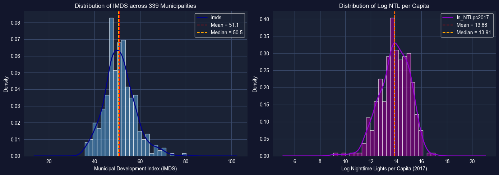
DISCUSSION:
1. Is the IMDS distribution unimodal or multimodal?
2. Is the NTL distribution symmetric or skewed?
3. What might explain any bimodality? (urban vs rural)
Key Concept 2.10: Spatial Data Distributions
Municipal-level data often exhibits multimodality reflecting the urban-rural divide. Unlike national statistics that produce single averages, municipality-level distributions can reveal distinct subpopulations—highly developed urban centers and less developed rural areas. Identifying these subgroups is essential for targeted policy interventions.
Task 3: Box Plots by Department (Semi-guided)
Objective: Create box plots of imds grouped by department (dep) to compare development across Bolivia’s 9 departments.
Instructions:
Create a box plot of imds grouped by dep (9 departments)
Order departments by median IMDS for clarity
Identify which departments have the highest and lowest median development
Which departments show the most spread (variability)?
Apply what you learned in section 2.3-2.4: Use grouped box plots to compare distributions across categories.
# Task 3: Box Plots by Department# ----------------------------------------------------------# Your code here: Create box plots of IMDS by department## Steps:# 1. Order departments by median IMDS# 2. Create horizontal box plot# 3. Add labels and formatting# Example structure:# dept_order = bol_key.groupby('dep')['imds'].median().sort_values().index# fig, ax = plt.subplots(figsize=(10, 7))# bol_key.boxplot(column='imds', by='dep', ax=ax, vert=False,# positions=range(len(dept_order)))# ax.set_xlabel('Municipal Development Index (IMDS)')# ax.set_ylabel('Department')# ax.set_title('Development Distribution by Department')# plt.suptitle('') # Remove automatic title# plt.tight_layout()# plt.show()# Hint: You can also use seaborn for cleaner grouped box plots:import seaborn as snsdept_order = bol_key.groupby('dep')['imds'].median().sort_values().index.tolist()fig, ax = plt.subplots(figsize=(10, 7))sns.boxplot(data=bol_key, x='imds', y='dep', order=dept_order, palette='viridis', ax=ax)ax.set_xlabel('Municipal Development Index (IMDS)')ax.set_ylabel('Department')ax.set_title('Municipal Development Distribution by Department')plt.tight_layout()plt.show()# Summary statistics by departmentprint("="*70)print("IMDS BY DEPARTMENT: MEDIAN AND IQR")print("="*70)dept_stats = bol_key.groupby('dep')['imds'].describe()[['50%', '25%', '75%', 'std']].round(1)dept_stats.columns = ['Median', 'Q1', 'Q3', 'Std Dev']print(dept_stats.sort_values('Median'))
/var/folders/tq/t98kb27n6djgrh085g476yhc0000gn/T/ipykernel_6868/1435479174.py:28: FutureWarning:
Passing `palette` without assigning `hue` is deprecated and will be removed in v0.14.0. Assign the `y` variable to `hue` and set `legend=False` for the same effect.
sns.boxplot(data=bol_key, x='imds', y='dep', order=dept_order,
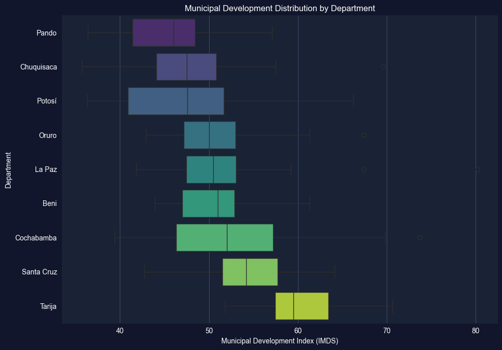
======================================================================
IMDS BY DEPARTMENT: MEDIAN AND IQR
======================================================================
Median Q1 Q3 Std Dev
dep
Pando 46.0 41.4 48.4 5.6
Chuquisaca 47.5 44.1 50.8 6.6
Potosí 47.5 40.9 51.7 7.6
Oruro 50.0 47.1 53.0 5.0
La Paz 50.5 47.5 53.0 5.4
Beni 51.0 47.0 52.9 4.5
Cochabamba 52.0 46.3 57.2 8.5
Santa Cruz 54.2 51.5 57.7 4.8
Tarija 59.5 57.4 63.5 5.5
Task 4: Log Transformations (Semi-guided)
Objective: Compare the distribution of raw population (pop2017) with its log transformation to demonstrate how log transformations improve symmetry for skewed data.
Instructions:
Plot the histogram of raw pop2017 — observe the extreme right skew
Apply np.log(pop2017) and plot its histogram
Compare summary statistics (skewness, kurtosis) before and after transformation
Discuss why log transformations are standard practice for population and income data
Apply what you learned in section 2.5: Log transformations convert multiplicative relationships into additive ones and reduce skewness.
# Task 4: Log Transformations# ----------------------------------------------------------# Your code here: Compare raw vs log-transformed population## Steps:# 1. Plot raw pop2017 histogram# 2. Plot np.log(pop2017) histogram# 3. Compare skewness and kurtosisimport numpy as nppop = bol_key['pop2017'].dropna()log_pop = np.log(pop)fig, axes = plt.subplots(1, 2, figsize=(14, 5))# Raw populationaxes[0].hist(pop, bins=30, color='coral', alpha=0.7, edgecolor='white')axes[0].set_xlabel('Population (2017)')axes[0].set_ylabel('Frequency')axes[0].set_title('Raw Population Distribution')axes[0].axvline(pop.mean(), color='red', linestyle='--', label=f"Mean = {pop.mean():,.0f}")axes[0].axvline(pop.median(), color='blue', linestyle='--', label=f"Median = {pop.median():,.0f}")axes[0].legend()# Log-transformed populationaxes[1].hist(log_pop, bins=30, color='teal', alpha=0.7, edgecolor='white')axes[1].set_xlabel('Log Population (2017)')axes[1].set_ylabel('Frequency')axes[1].set_title('Log-Transformed Population Distribution')axes[1].axvline(log_pop.mean(), color='red', linestyle='--', label=f"Mean = {log_pop.mean():.2f}")axes[1].axvline(log_pop.median(), color='blue', linestyle='--', label=f"Median = {log_pop.median():.2f}")axes[1].legend()plt.tight_layout()plt.show()# Compare distributional measuresprint("="*70)print("EFFECT OF LOG TRANSFORMATION ON POPULATION")print("="*70)print(f"{'Measure':<15}{'Raw pop2017':>15}{'log(pop2017)':>15}")print("-"*45)print(f"{'Skewness':<15}{pop.skew():>15.3f}{log_pop.skew():>15.3f}")print(f"{'Kurtosis':<15}{pop.kurtosis():>15.3f}{log_pop.kurtosis():>15.3f}")print(f"{'Mean':<15}{pop.mean():>15,.0f}{log_pop.mean():>15.2f}")print(f"{'Median':<15}{pop.median():>15,.0f}{log_pop.median():>15.2f}")
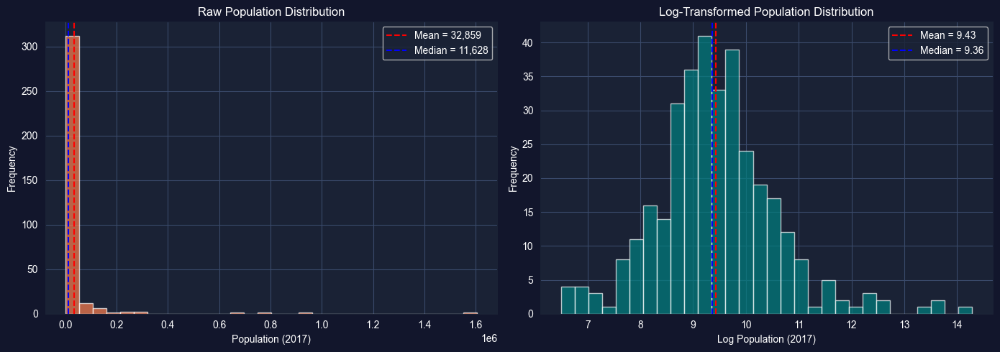
======================================================================
EFFECT OF LOG TRANSFORMATION ON POPULATION
======================================================================
Measure Raw pop2017 log(pop2017)
---------------------------------------------
Skewness 9.712 0.641
Kurtosis 110.387 2.119
Mean 32,859 9.43
Median 11,628 9.36
Key Concept 2.11: Development Indicator Interpretation
SDG composite indices like IMDS (0-100) aggregate multiple dimensions of development into a single score. While convenient for ranking, composite indices can mask important variation in specific dimensions. For example, a municipality may score well on education (SDG 4) but poorly on health (SDG 3). Examining individual SDG variables alongside composite indices provides a more complete picture.
Task 5: Time Series of NTL (Independent)
Objective: Calculate and plot the mean nighttime lights across municipalities for each year from 2012 to 2020 to examine the evolution of satellite-measured economic activity.
Instructions:
Calculate the mean of ln_NTLpc2012 through ln_NTLpc2020 across all municipalities for each year
Plot the resulting time series (year on x-axis, mean log NTL on y-axis)
Discuss: Is there a trend? Any notable changes? What might explain the pattern?
Apply what you learned in section 2.6: Use time series visualization to identify trends and patterns.
# Task 5: Time Series of NTL# ----------------------------------------------------------# Your code here: Calculate mean NTL across municipalities for each year## Steps:# 1. Select NTL columns for 2012-2020# 2. Calculate means# 3. Plot time series# Example structure:# ntl_cols = [f'ln_NTLpc{yr}' for yr in range(2012, 2021)]# years = list(range(2012, 2021))# mean_ntl = [bol_key[col].mean() for col in ntl_cols]## fig, ax = plt.subplots(figsize=(10, 5))# ax.plot(years, mean_ntl, marker='o', color='navy', linewidth=2)# ax.set_xlabel('Year')# ax.set_ylabel('Mean Log NTL per Capita')# ax.set_title('Evolution of Nighttime Lights across Bolivian Municipalities')# ax.grid(True, alpha=0.3)# plt.tight_layout()# plt.show()
Task 6: Regional Distribution Analysis (Independent)
Objective: Compare the distributions of imds across departments using overlapping histograms or violin plots. Write a 200-word summary of regional inequality in Bolivia.
Instructions:
Create overlapping histograms or violin plots of imds for at least 3 departments
Compare the distributional shapes: Do some departments have more spread? More bimodality?
Write a 200-word summary discussing what these distributions reveal about regional inequality in Bolivia
Which departments might need the most targeted development interventions? Why?
Apply your skills: This task combines histogram/density visualization with substantive economic interpretation.
# Task 6: Regional Distribution Analysis# ----------------------------------------------------------# Your code here: Compare IMDS distributions across departments## Option A: Overlapping histograms (select 3-4 key departments)# Option B: Violin plots for all 9 departments# Option C: Ridge plot (multiple KDE curves stacked vertically)# Example structure (violin plots):# fig, ax = plt.subplots(figsize=(12, 7))# dept_order = bol_key.groupby('dep')['imds'].median().sort_values().index.tolist()# sns.violinplot(data=bol_key, x='imds', y='dep', order=dept_order,# palette='coolwarm', ax=ax, inner='quartile')# ax.set_xlabel('Municipal Development Index (IMDS)')# ax.set_ylabel('Department')# ax.set_title('Distribution of Municipal Development by Department')# plt.tight_layout()# plt.show()# After creating your visualization, write a 200-word summary below:# print("REGIONAL INEQUALITY SUMMARY")# print("=" * 70)# print("Write your 200-word analysis here...")
What You’ve Learned from This Case Study
By applying Chapter 2’s univariate analysis tools to Bolivia’s municipal SDG data, you’ve characterized the distribution of development outcomes across 339 municipalities. Specifically, you’ve practiced:
Descriptive statistics for development indicators—mean, median, SD, skewness, and kurtosis
Visualization of distributions using histograms, box plots, and kernel density estimation (KDE)
Log transformations for highly skewed data like population
Time series summary of satellite-measured nighttime lights (2012-2020)
Regional comparison of development distributions across Bolivia’s 9 departments
These univariate tools reveal the shape of Bolivia’s development distribution—its central tendency, spread, and the urban-rural divide reflected in multimodal patterns. Understanding these distributional properties is the essential first step before more advanced analysis.
Connection to future chapters: In Chapter 4, we’ll test whether differences across departments are statistically significant. In Chapter 5, we’ll explore bivariate relationships between satellite data and development. Later chapters will build progressively more sophisticated models for predicting and explaining municipal development outcomes.
Well done! You’ve now explored Bolivia’s municipal development data using the full univariate analysis toolkit—from summary statistics to distributional visualization and transformation.